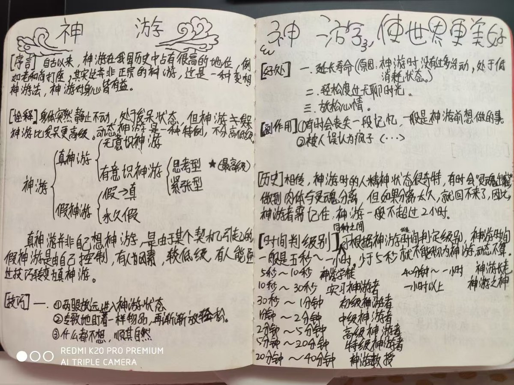
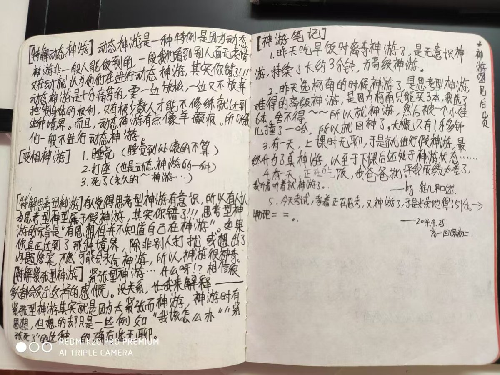

愿晚星照常升起🌈(keep4o)
@tadatsukiei
我初中时把自己不断解离后的极端虚无感称为“存在消失”。
我试着把这种感受告诉他人，但初中生无法理解，总被下体笑话敷衍。
所以我放弃了和同龄人交流，继续做自己喜欢的事。


讴歌终结之物
@yozuha15
。。。初中在无法上网查东西的信息封闭时期发现自己长期解离然后并不知道解离这个概念所以以为自己自创了什么很厉害的东西还写了好多这种笔记（这只是随便一本里面的）甚至还把这个全班传教😂，好搞笑但是好心酸啊啊啊 https://t.co/8byZCtUpXY